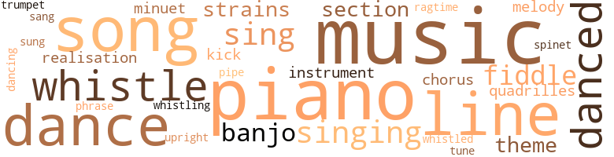
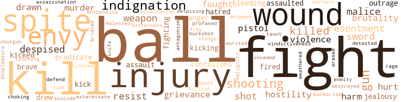
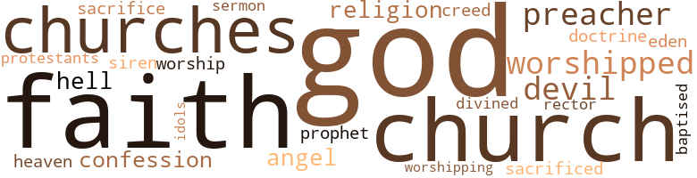

Colonel's Dream (The), by Chesnutt, Charles Waddell (1905)
110 music-related terms matched in this text.
Most frequent terms in this topic: music (16); piano (13); song (9); dance (7); line (5)
banjo.n.01
Definition: a stringed instrument of the guitar family that has long neck and circular body
| word | sentence |
|---|---|
| banjo | It is a long way from the banjo to the piano - it marks the progress of a family and foreshadows the evolution of a race . |
| banjo | As they approached this structure , which was sufficiently forbidding in appearance to depress the most lighthearted , the strumming of a banjo became audible , accompanying a mellow Negro voice which was singing , to a very ragged ragtime air , words of which the burden was something like this : " W'at 's de use er my w ' o'kin ' so hahd ? |
| banjo | A musical nigger , too , who plays the banjo , an ' sings jus ' like a - like a blackbird . |
chorus.n.01
Definition: any utterance produced simultaneously by a group
| word | sentence |
|---|---|
| chorus | Old ' Poleon 's fiddle , to which one of the guests was improvising an accompaniment on the colonel 's new piano , had struck up " Camptown Races , " and the rollicking lilt of the chorus was resounding through the house . |
| chorus | Graciella went to the piano and with great boldness of touch struck the bizarre opening chords and then launched into the grotesque words of the latest New York " coon song , " one of the first and worst of its kind , and the other young people joined in the chorus . |
cornet.n.01
Definition: a brass musical instrument with a brilliant tone; has a narrow tube and a flared bell and is played by means of valves
| word | sentence |
|---|---|
| trumpet | They passed slowly along , under the drooping elms and willows , past the monuments on either hand - here , resting on a low brick wall , a slab of marble , once white , now gray and moss-grown , from which the hand of time had well nigh erased the carved inscription ; here a family vault , built into the side of a mound of earth , from which only the barred iron door distinguished it ; here a pedestal , with a time-worn angel holding a broken fragment of the resurrection trumpet ; here a prostrate headstone , and there another bending to its fall ; and among them a profusion of rose bushes , on some of which the early roses were already blooming - scarcely a well-kept cemetery , for in many lots the shrubbery grew in wild unpruned luxuriance ; nor yet entirely neglected , since others showed the signs of loving care , and an effort had been made to keep the walks clean and clear . |
dance.n.01
Definition: an artistic form of nonverbal communication
| word | sentence |
|---|---|
| dance | She did not dream of declining the proffered token , and during the next dance her mind was busily occupied with the question of what it should be - a ring , a bracelet , a bicycle , a set of books ? |
| dance | She had not yet decided , when Ben came up to claim her for a dance . |
| dance | When the next dance , which was a waltz , began , she moved out upon the floor in the arms of Barclay Fetters . |
| dance | But let 's hurry back , Tom , or we 'll lose the next dance . " |
| dances | McRae testified that he and Barclay Fetters had gone down between dances , from the Opera Ball , to the hotel bar , to get a glass of seltzer . |
dance.v.02
Definition: move in a pattern; usually to musical accompaniment; do or perform a dance
| word | sentence |
|---|---|
| dancing | She was dancing with Colonel French . |
dance.v.03
Definition: skip, leap, or move up and down or sideways
| word | sentence |
|---|---|
| dance | " And I will play a minuet on your new piano , " said Miss Laura , " and teach the girls beforehand how to dance it . |
| danced | Miss Laura played a minuet , which the young people danced . |
| danced | Major McLean danced the highland fling , and some of the ladies sang old-time songs , and war lyrics , which stirred the heart and moistened the eyes . |
| dance | She had run out to the diningroom to speak to the housekeeper about the refreshments , and was returning through the hall , when she stopped for a moment to look into the library , where those who did not care to dance were playing cards . |
| danced | He 's perfectly infatuated ; he has danced with her three times to once with Laura . " " |
| dance | If he did not ask her to dance , then either the Virginia reel , or the lancers , or quadrilles , would surely bring them together ; and though Graciella sighed , she did not despair . |
| danced | I danced with him once when he was drunk , and I never knew it - it was my first ball , and I was intoxicated myself , with excitement . |
kick.v.04
Definition: kick a leg up
| word | sentence |
|---|---|
| kick | He was intensely interested in a long-eared mechanical mule , constructed by Ben Dudley out of bits of wood and leather and controlled by certain springs made of rubber bands , by manipulating which the mule could be made to kick furiously . |
| kick | On the afternoon following the colonel 's visit to Mink Run , old Peter , when he came for Phil , was obliged to stay long enough to see the antics of the mechanical mule ; and had not that artificial animal suddenly refused to kick , and lapsed into a characteristic balkiness for which there was no apparent remedy , it might have proved difficult to get Phil away . |
minuet.n.01
Definition: a stately court dance in the 17th century
| word | sentence |
|---|---|
| minuet | " And I will play a minuet on your new piano , " said Miss Laura , " and teach the girls beforehand how to dance it . |
| minuet | Miss Laura played a minuet , which the young people danced . |
music.n.01
Definition: an artistic form of auditory communication incorporating instrumental or vocal tones in a structured and continuous manner
| word | sentence |
|---|---|
| music | Mr. French was conscious that her visit , instead of tiring him , had had an opposite effect ; she had come and gone like a pleasant breeze , bearing sweet odours and the echo of distant music . |
| music | He had taken her driving ; he had lent her books and music ; he had brought or sent the New York paper every day for her to read . |
| music | The colonel had slackened his pace at the sound of the music , but , after the first few bars , started forward with quickened footsteps which he did not relax until little Phil 's weight , increasing momentarily , brought home to him the consciousness that his stride was too long for the boy 's short legs . |
| music | She might take lessons in music , or art ; her aunt would hardly care for her to learn stenography now , or go into magazine work . |
| music | The gentlemen accepting were expected to subscribe to the funds for hall rent , music and refreshments . |
| music | In former years the music had been furnished by local Negro musicians , but there were no longer any of these , and a band of string music was brought in from another town . |
| music | In former years the music had been furnished by local Negro musicians , but there were no longer any of these , and a band of string music was brought in from another town . |
| music | The music stopped , and a crowd of young fellows surrounded her . |
| music | If you could take me away from this dead old town , with its lazy white people and its trifling niggers , to a place where there 's music and art , and life and society - where there 's something going on all the time , I 'd like to marry you . |
| music | The conversation languished for a moment , and then one of the young ladies said something about music , and one of the young men remarked that he had brought over a new song . |
| music | She wo n't mind the music ; she is accustomed to it . " |
| music | At home , the colonel subscribed to the opera , and enjoyed the music . |
| music | A plantation song of the olden time , as he remembered it , borne upon the evening air , when sung by the tired slaves at the end of their day of toil , would have been pleasing , with its simple melody , its plaintive minor strains , its notes of vague longing ; but to the colonel 's senses there was to-night no music in this hackneyed popular favourite . |
| music | In a metropolitan music hall , gaudily bedecked and brilliantly lighted , it would have been tolerable from the lips of a black-face comedian . |
| music | From a pile of time-stained music she selected a sheet and seated herself at the piano . |
| music | The music died into silence . |
musical_instrument.n.01
Definition: any of various devices or contrivances that can be used to produce musical tones or sounds
| word | sentence |
|---|---|
| instruments | The crop-lien laws were little more than the instruments of organised robbery . |
| instrument | Fetters had been a character in Clarendon - not an admirable character , scarcely a good character , almost a bad character ; a necessary adjunct of an evil system , and , like other parasites , worse than the body on which he fed ; doing the dirty work of slavery , and very naturally despised by those whose instrument he was , but finding consolation by taking it out of the Negroes in the course of his business . |
phrase.n.02
Definition: a short musical passage
| word | sentence |
|---|---|
| phrase | Knowing from experience that white gentlemen , in their intercourse with coloured people , were apt to be , in the local phrase , " sometimey , " or uncertain in their moods , he first tested , with a few remarks about the weather , the colonel 's amiability , and finding him approachable , proved quite talkative and confidential . |
piano.n.01
Definition: a keyboard instrument that is played by depressing keys that cause hammers to strike tuned strings and produce sounds
| word | sentence |
|---|---|
| piano | His daughter plays the piano , and sings : ' I dreamt that I dwelt in marble halls , With vassals and serfs by my side . ' |
| piano | " And I will play a minuet on your new piano , " said Miss Laura , " and teach the girls beforehand how to dance it . |
| piano | Old ' Poleon 's fiddle , to which one of the guests was improvising an accompaniment on the colonel 's new piano , had struck up " Camptown Races , " and the rollicking lilt of the chorus was resounding through the house . |
| piano | Her disappearance was promptly followed by the notes of a piano , slightly out of tune , to which some one - presumably the young woman - was singing in a high voice , which might have been better had it been better trained , " I dreamt that I dwe-elt in ma-arble halls With vassals and serfs at my si-i-ide . " |
| piano | Thinking he had been mistaken in the woman 's identity , he slackened his pace , and ere he had passed out of hearing , caught the tones of a piano , accompanying the words , " I dreamt that I dwelt in marble halls , With vassals and serfs at my s-i-i-de . " |
| piano | The barber 's was the only coloured family in town that owned a piano . |
| piano | It is a long way from the banjo to the piano - it marks the progress of a family and foreshadows the evolution of a race . |
| piano | Graciella went to the piano and with great boldness of touch struck the bizarre opening chords and then launched into the grotesque words of the latest New York " coon song , " one of the first and worst of its kind , and the other young people joined in the chorus . |
| piano | Graciella and her friends had finished their song , the piano had ceased to sound , and the visitors were taking their leave . |
| piano | " If my memory is true , you too played the piano when you - when I was young . " |
| piano | " It is the same piano , Henry , and , like our life here , somewhat thin and weak of tone . |
| piano | From a pile of time-stained music she selected a sheet and seated herself at the piano . |
| piano | Under her sympathetic touch a gentle stream of melody flowed from the old-time piano , scarcely stronger toned in its decrepitude , than the spinet of a former century . |
pipe.n.04
Definition: a tubular wind instrument
| word | sentence |
|---|---|
| pipe | In the open doorways , through which the flies swarmed in and out , grown men , some old , some still in the prime of life , were lounging , pipe in mouth , while old women pottered about the yards , or pushed back their sunbonnets to stare vacantly at the advancing buggy . |
quadrille.n.01
Definition: music for dancing the quadrille
| word | sentence |
|---|---|
| quadrilles | We must have a fiddler , a black fiddler , to play quadrilles and the Virginia Reel . " |
| quadrilles | If he did not ask her to dance , then either the Virginia reel , or the lancers , or quadrilles , would surely bring them together ; and though Graciella sighed , she did not despair . |
ragtime.n.01
Definition: music with a syncopated melody (usually for the piano)
| word | sentence |
|---|---|
| ragtime | As they approached this structure , which was sufficiently forbidding in appearance to depress the most lighthearted , the strumming of a banjo became audible , accompanying a mellow Negro voice which was singing , to a very ragged ragtime air , words of which the burden was something like this : " W'at 's de use er my w ' o'kin ' so hahd ? |
realization.n.03
Definition: a musical composition that has been completed or enriched by someone other than the composer
| word | sentence |
|---|---|
| realisation | " To me , " said the colonel , smiling tenderly into her eyes , " it is the realisation of an ideal . |
| realisation | By this time the liquor he had drunk had its full effect , and complete unconsciousness supervened to save him , for a little while , from the realisation of his disgrace . |
section.n.01
Definition: a self-contained part of a larger composition (written or musical)
| word | sentence |
|---|---|
| section | If the new franchise amendment went through , said the major , the Negro would be eliminated from politics , and the people of the South , relieved of the fear of " nigger domination , " could give their attention to better things , and their section would move forward along the path of progress by leaps and bounds . |
| section | The seed which the colonel sowed seemed to fall by the wayside , it is true ; but other eyes have seen with the same light , and while Fetters and his kind still dominate their section , other hands have taken up the fight which the colonel dropped . |
sing.v.02
Definition: produce tones with the voice
| word | sentence |
|---|---|
| sang | Major McLean danced the highland fling , and some of the ladies sang old-time songs , and war lyrics , which stirred the heart and moistened the eyes . |
| sing | " You taught her to sing - ' I dreamt that I dwelt in marble halls ? |
| sung | A plantation song of the olden time , as he remembered it , borne upon the evening air , when sung by the tired slaves at the end of their day of toil , would have been pleasing , with its simple melody , its plaintive minor strains , its notes of vague longing ; but to the colonel 's senses there was to-night no music in this hackneyed popular favourite . |
| sings | A musical nigger , too , who plays the banjo , an ' sings jus ' like a - like a blackbird . |
singing.n.01
Definition: the act of singing vocal music
| word | sentence |
|---|---|
| singing | Negroes were working in the fields , birds were singing in the trees . |
| singing | Her disappearance was promptly followed by the notes of a piano , slightly out of tune , to which some one - presumably the young woman - was singing in a high voice , which might have been better had it been better trained , " I dreamt that I dwe-elt in ma-arble halls With vassals and serfs at my si-i-ide . " |
| singing | I heard her singing the song the day I came back - the first time I walked by the old house . |
| singing | As they approached this structure , which was sufficiently forbidding in appearance to depress the most lighthearted , the strumming of a banjo became audible , accompanying a mellow Negro voice which was singing , to a very ragged ragtime air , words of which the burden was something like this : " W'at 's de use er my w ' o'kin ' so hahd ? |
song.n.01
Definition: a short musical composition with words
| word | sentence |
|---|---|
| songs | Major McLean danced the highland fling , and some of the ladies sang old-time songs , and war lyrics , which stirred the heart and moistened the eyes . |
| song | The travellers had left New York in the midst of a snowstorm , but here the scent of lilac and of jonquil , the song of birds , the breath of spring , were all about them . |
| song | In the moonlight , and at a distance of some rods , the song sounded well enough , and the colonel lingered until it ceased , and the player began to practise scales , when he continued his walk . |
| song | I heard her singing the song the day I came back - the first time I walked by the old house . |
| song | The conversation languished for a moment , and then one of the young ladies said something about music , and one of the young men remarked that he had brought over a new song . |
| song | A plantation song of the olden time , as he remembered it , borne upon the evening air , when sung by the tired slaves at the end of their day of toil , would have been pleasing , with its simple melody , its plaintive minor strains , its notes of vague longing ; but to the colonel 's senses there was to-night no music in this hackneyed popular favourite . |
| song | The song of the coloured girl , who had dreamt that she dwelt in marble halls , and the rest , had been less incongruous ; it had at least breathed aspiration . |
| song | The colonel , beckoning Miss Laura to follow him , moved to the farther end of the piazza , where they might not hear the singers and the song . |
| song | Graciella and her friends had finished their song , the piano had ceased to sound , and the visitors were taking their leave . |
| song | The grating of the key in the rusty lock interrupted the song . |
spinet.n.02
Definition: early model harpsichord with only one string per note
| word | sentence |
|---|---|
| spinet | Under her sympathetic touch a gentle stream of melody flowed from the old-time piano , scarcely stronger toned in its decrepitude , than the spinet of a former century . |
theme.n.03
Definition: (music) melodic subject of a musical composition
| word | sentence |
|---|---|
| theme | While they were talking upon this latter theme , there was some commotion in the street , in front of the hotel , and looking up they saw that a horse , attached to a loaded wagon , had fallen in the roadway , and having become entangled in the harness , was kicking furiously . |
| theme | " Tell me something of your own life - it could only be a cheerful theme , for you have means and leisure , and a perfect environment . |
tune.n.01
Definition: a succession of notes forming a distinctive sequence
| word | sentence |
|---|---|
| strains | In a corner of the broad piazza , he had poured out his youthful heart , one summer evening , in strains of passionate devotion , to his first love , a beautiful woman of thirty who was visiting his mother , and who had told him between smiles and tears , to be a good boy and wait a little longer , until he was sure of his own mind . |
| line | The colonel , with his little boy , had left the main line of railroad leading north and south and had taken at a certain way station the one daily train for Clarendon , with which the express made connection . |
| lines | Peter had brought with him some hooks and lines , and , he and Phil , after leaving the house , followed the bank of the creek , climbing a fence now and then , until they reached the old mill site , upon which w ' ork had not yet begun . |
| lines | They found a shady spot , and seating themselves upon the bank , baited their lines , and dropped them into a quiet pool . |
| lines | There were already lines enough in the town - the deep and distinct colour line , theoretically all-pervasive , but with occasional curious exceptions ; the old line between the " rich white folks " or aristocrats - no longer rich , most of them , but retaining some of their former wealth and clinging tenaciously to a waning prestige - and the " poor whites , " still at a social disadvantage , but gradually evolving a solid middle class , with reinforcements from the decaying aristocracy , and producing now and then some ambitious and successful man like Fetters . |
| tune | Her disappearance was promptly followed by the notes of a piano , slightly out of tune , to which some one - presumably the young woman - was singing in a high voice , which might have been better had it been better trained , " I dreamt that I dwe-elt in ma-arble halls With vassals and serfs at my si-i-ide . " |
| line | In these words , written four thousand years ago , he has described you , line for line . " |
| line | In these words , written four thousand years ago , he has described you , line for line . " |
| line | From what the colonel could gather , that particular line fence dispute had been in litigation for twenty years , had cost several lives , and had resulted in a feud that involved a whole township . |
| lines | Other towns , some not far from it , lying nearer the main lines of travel , have been swept into the current of modern life , but not yet Clarendon . |
| line | The colonel was himself a gentleman , and the descendant of a long line of gentlemen . |
| melody | A plantation song of the olden time , as he remembered it , borne upon the evening air , when sung by the tired slaves at the end of their day of toil , would have been pleasing , with its simple melody , its plaintive minor strains , its notes of vague longing ; but to the colonel 's senses there was to-night no music in this hackneyed popular favourite . |
| strains | A plantation song of the olden time , as he remembered it , borne upon the evening air , when sung by the tired slaves at the end of their day of toil , would have been pleasing , with its simple melody , its plaintive minor strains , its notes of vague longing ; but to the colonel 's senses there was to-night no music in this hackneyed popular favourite . |
| melody | Under her sympathetic touch a gentle stream of melody flowed from the old-time piano , scarcely stronger toned in its decrepitude , than the spinet of a former century . |
upright.n.02
Definition: a piano with a vertical sounding board
| word | sentence |
|---|---|
| upright | His faded eyes were turned toward a woman , dressed in a homespun frock and a muslin cap , who sat bolt upright , in a straight-backed chair , at the other end of the piazza , with her hands folded on her lap , looking fixedly toward her vis-a-vis . |
violin.n.01
Definition: bowed stringed instrument that is the highest member of the violin family; this instrument has four strings and a hollow body and an unfretted fingerboard and is played with a bow
| word | sentence |
|---|---|
| fiddle | Poleon Campbell , an old-time Negro fiddler , whom Peter had resurrected from some obscure cabin , oiled his rheumatic joints , tuned his fiddle and rosined his bow , and under the inspiration of good food and drink and liberal wage , played through his whole repertory , which included such ancient favourites as , " Fishers ' Hornpipe , " " Soldiers ' Joy , " " Chicken in the Bread-tray , " and the " Campbells are Coming . " |
| fiddle | Old ' Poleon 's fiddle , to which one of the guests was improvising an accompaniment on the colonel 's new piano , had struck up " Camptown Races , " and the rollicking lilt of the chorus was resounding through the house . |
| fiddles | Member dem co ' n-stalk fiddles we use ' ter make , an ' dem elderberry-wood whistles ? " |
whistle.n.01
Definition: the sound made by something moving rapidly or by steam coming out of a small aperture
| word | sentence |
|---|---|
| whistles | Member dem co ' n-stalk fiddles we use ' ter make , an ' dem elderberry-wood whistles ? " |
whistle.v.01
Definition: make whistling sounds
| word | sentence |
|---|---|
| whistle | The whistle of the train was heard in the distance as the colonel recrossed the square . |
| whistle | It would just come at your call , like my dog when I whistle to him . " |
| whistling | And that was very funny , about calling the money and having it cornel She had often heard of people whistling for their money , but had never heard that it came - that was Ben 's idea . |
| whistled | The clerk whistled to himself as he read the petition in order to make the entry . |
| whistle | There was no strident steam whistle from factory or train to assault the ear , no rumble of passing cabs or street cars . |
whistle.v.05
Definition: make a whining, ringing, or whistling sound
| word | sentence |
|---|---|
| sings | His daughter plays the piano , and sings : ' I dreamt that I dwelt in marble halls , With vassals and serfs by my side . ' |
| sings | She sings it much better now . |
225 violence-related terms matched in this text.
Most frequent terms in this topic: ball (17); fight (15); injury (9); kill (8); indignation (7)
affray.n.02
Definition: a noisy fight
| word | sentence |
|---|---|
| fray | " That 's the way you feel now , " replied Kirby , lighting another cigarette , " but wait until you are rested , and you 'll yearn for the fray ; the first million only whets the appetite for more . " |
anger.n.01
Definition: a strong emotion; a feeling that is oriented toward some real or supposed grievance
| word | sentence |
|---|---|
| anger | At Clay Johnson 's saloon he hurled invectives at the colonel , to all who would listen , and with anger and bad whiskey , soon worked himself into a frame of mind that was ripe for any mischief . |
| anger | With the aid of well-directed blows of his fists he forced the Negro down , who , unable to regain his feet , finally , whether from fear or exhaustion , lay inert , until the constable , having worked off his worst anger , and not deeming it to his advantage seriously to disable the prisoner , in whom he had a pecuniary interest , desisted from further punishment . |
assail.v.01
Definition: attack someone physically or emotionally
| word | sentence |
|---|---|
| assaulted | He 's defied our rules and defied the law , and defied me , and assaulted one of the guards ; and he ought to be made an example of . |
| assaulted | than the prisoner , who had evidently been drinking heavily and showed all the signs of intoxication , had picked a quarrel with them and assaulted Mr. Fetters . |
bird_shot.n.01
Definition: small lead shot for shotgun shells
| word | sentence |
|---|---|
| buckshot | A charge of buckshot had been fired at close range , from a clump of bushes by the wayside , and the charge had taken effect in the side of the face . |
bleeding.n.01
Definition: the flow of blood from a ruptured blood vessel
| word | sentence |
|---|---|
| bleeding | Forgetting his pain , he hurried to the scene , only to find his heart 's delight lying pale , bleeding and unconscious , beside the old Negro who had sacrificed his life to save him . |
| bleeding | Phil showed no superficial injury , save a cut upon the head , from which the bleeding was soon stanched . |
bridle.v.01
Definition: anger or take offense
| word | sentence |
|---|---|
| bridled | Graciella blushed and bridled with pleasure . |
bruise.n.01
Definition: an injury that doesn't break the skin but results in some discoloration
| word | sentence |
|---|---|
| contusions | One of his eyes was bloodshot , and surrounded by a wide area of discolouration , and he was conscious of several painful contusions on other portions of his body . |
| contusions | He had walked with a slight limp , there were several contusions upon his face ; and upon entering the room he had thrown a defiant glance around him , which had not quailed even before the stern eye of the tall man , Turner , who , as the agent of the absent Fetters , had bid on Sam Brown . |
brutality.n.02
Definition: a brutal barbarous savage act
| word | sentence |
|---|---|
| barbarism | His fight against Fetters and what he represented should take on a new character ; henceforward it should be a crusade to rescue from threatened barbarism the land which contained the tombs of his loved ones . |
character_assassination.n.01
Definition: an attack intended to ruin someone's reputation
| word | sentence |
|---|---|
| assassination | But two attempts at assassination constituted a much graver affair . |
contemn.v.01
Definition: look down on with disdain
| word | sentence |
|---|---|
| despised | A shrewd , capable man was the mayor , who despised Negroes and distrusted aristocrats , and had the courage of his convictions . |
| despised | You had me whipped - whipped - whipped - by a poor white dog I had despised and spurned ! |
| Despising | Despising herself for the weakness which he might have interpreted as a bid for a compliment , she was glad that he seemed unconscious of the remark . |
| despised | Fetters had been a character in Clarendon - not an admirable character , scarcely a good character , almost a bad character ; a necessary adjunct of an evil system , and , like other parasites , worse than the body on which he fed ; doing the dirty work of slavery , and very naturally despised by those whose instrument he was , but finding consolation by taking it out of the Negroes in the course of his business . |
| despised | Father despised the slave-trader 's son , but admired his ability to get along . |
desecrate.v.01
Definition: violate the sacred character of a place or language
| word | sentence |
|---|---|
| profaned | No Negro 's body had ever profaned the sacred soil of Oak Cemetery . |
destroy.v.04
Definition: put (an animal) to death
| word | sentence |
|---|---|
| destroyed | The colonel had heard grewsome tales of Fetters 's convict labour plantation ; he had seen the operation of Fetters 's cotton-mill , where white humanity , in its fairest and tenderest form , was stunted and blighted and destroyed ; and he had not forgotten the scene in the justice 's office . |
displeasure.n.01
Definition: the feeling of being displeased or annoyed or dissatisfied with someone or something
| word | sentence |
|---|---|
| displeasure | " I do n't quite see the joke , " said the colonel , restraining his displeasure . |
draw.v.23
Definition: pull (a person) apart with four horses tied to his extremities, so as to execute him
| word | sentence |
|---|---|
| drawn | " Have the deed drawn up as soon as you like , " said the colonel , as he left the shop , " and when it is done I 'll give you a draft for the money . " |
| drawn | He had made a very good sale , and he lost no time in having the deed drawn up . |
| drew | They drew up before an open door at one corner of the building . |
| drawn | When the carriage had drawn up in front of the house , the colonel became aware of two figures on the long piazza . |
| drew | While he stood thus communing with his own bitter thoughts , another carriage , drawn by a pair of beautiful black horses , drew up to the curb in front of him . |
eliminate.v.03
Definition: kill in large numbers
| word | sentence |
|---|---|
| eradicate | She was also well endowed with certain other characteristics of youth ; among them ingenuousness , which , if it be a fault , experience is sure to correct ; and impulsiveness , which even the school of hard knocks is not always able to eradicate , though it may chasten . |
| eradicate | To eradicate them entirely in any stated time was of course impossible , human nature being what it w?as , but he would do nothing to accentuate them . |
elimination.n.05
Definition: the murder of a competitor
| word | sentence |
|---|---|
| elimination | " Yes , sir , " said Mr. Blake , taking the colonel 's hand , " I believe in white supremacy , and the elimination of the nigger vote . |
envy.n.01
Definition: a feeling of grudging admiration and desire to have something that is possessed by another
| word | sentence |
|---|---|
| envy | And yet , a year later , he was to recall this recent past with envy and regret ; for in the meantime he was to fight another battle against the same forces , and others quite as deeply rooted in human nature . |
| envy | The things for which she wished most were associated with distant places , and her longing for them had never taken the form of envy of those around her . |
| envy | Indeed envy is scarcely a vice of youth ; it is a weed that flourishes best after the flower of hope has begun to wither . |
| envy | " I suppose I 'm an object of envy to every young fellow in town . " |
| envy | He had never been of an envious disposition ; he had always looked upon envy as a mean vice , unworthy of a gentleman ; but for a moment something very like envy pulled at his heartstrings . |
| envy | He had never been of an envious disposition ; he had always looked upon envy as a mean vice , unworthy of a gentleman ; but for a moment something very like envy pulled at his heartstrings . |
| envy | " A fine woman , " he murmured , " I could envy French his chances , though he does n't seem to see them - that is , if I were capable of envy toward so fine a fellow and so good a friend . |
erase.v.01
Definition: remove from memory or existence
| word | sentence |
|---|---|
| erased | They passed slowly along , under the drooping elms and willows , past the monuments on either hand - here , resting on a low brick wall , a slab of marble , once white , now gray and moss-grown , from which the hand of time had well nigh erased the carved inscription ; here a family vault , built into the side of a mound of earth , from which only the barred iron door distinguished it ; here a pedestal , with a time-worn angel holding a broken fragment of the resurrection trumpet ; here a prostrate headstone , and there another bending to its fall ; and among them a profusion of rose bushes , on some of which the early roses were already blooming - scarcely a well-kept cemetery , for in many lots the shrubbery grew in wild unpruned luxuriance ; nor yet entirely neglected , since others showed the signs of loving care , and an effort had been made to keep the walks clean and clear . |
euthanasia.n.01
Definition: the act of killing someone painlessly (especially someone suffering from an incurable illness)
| word | sentence |
|---|---|
| euthanasia | To a doomed race , ignorance is euthanasia , and knowledge is but pain and sorrow . |
exterminate.v.01
Definition: kill en masse; kill on a large scale; kill many
| word | sentence |
|---|---|
| exterminate | ---- " " And therefore , O man of God , must we exterminate him ? " |
ferociousness.n.01
Definition: the trait of extreme cruelty
| word | sentence |
|---|---|
| brutality | Martin went further than I intended , and I have discharged him for his brutality . |
| brutality | It justified a fine faith in humanity , that wealth and power should have been attained by the poor white lad , over whom , with a boy 's unconscious brutality , he had tyrannised in his childhood . |
| brutality | The unconscious brutality of the proceeding grated harshly upon the colonel 's nerves . |
fight.n.05
Definition: a boxing or wrestling match
| word | sentence |
|---|---|
| fight | Should the sale be completed , they were richer men than they could have hoped to be after ten years more of business stress and struggle ; should it fail , they were heavy losers , for their fight had been expensive . |
| fight | She had learned , from Kirby , of the chivalrous manner in which Mr. French had protected her interests and spared her feelings in the fight with Consolidated Bagging . |
| fight | But if Fetters wanted a fight , Fetters should have a fight . |
| fight | But if Fetters wanted a fight , Fetters should have a fight . |
| fight | We 've won our first fight , and I 've never really seen the fellow yet . " |
| fight | Ben 's fight with young Fetters became a matter of public comment the next day after the ball . |
| fight | I guess there 's no doubt Ben was intoxicated , but we know he is n't a drinking man , and one drink - or even one drunk - does n't make a drunkard , nor one fight a rowdy . |
| fight | He had gone into this fight for Johnson - or rather to please Miss Laura . |
| fight | It was recalled that he was of good family and that his forbears had rendered valuable service to the State , and that he had never been seen to drink before , or known to be in a fight , but that on the contrary he was quiet and harmless to a fault . |
| fight | His fight against Fetters and what he represented should take on a new character ; henceforward it should be a crusade to rescue from threatened barbarism the land which contained the tombs of his loved ones . |
| fight | The seed which the colonel sowed seemed to fall by the wayside , it is true ; but other eyes have seen with the same light , and while Fetters and his kind still dominate their section , other hands have taken up the fight which the colonel dropped . |
fight.v.02
Definition: fight against or resist strongly
| word | sentence |
|---|---|
| fight | I 'm going to order you and Phil away for three months , to some mild climate , where you 'll be free from business cares and where the boy can grow strong without having to fight a raw Eastern spring . |
| fight | And yet , a year later , he was to recall this recent past with envy and regret ; for in the meantime he was to fight another battle against the same forces , and others quite as deeply rooted in human nature . |
| fight | But he was to fight upon a new field , and with different weapons , and with results which could not be foreseen . |
| fought | Expecting to yield in the end , they had fought for position - with brilliant results . |
| fighting | The fighting blood of the old Frenches was stirred . |
| fought | He had , however , placed a wrought-iron bench underneath the trees , - where he would sit and read his paper , while little Phil questioned old Peter about his grandfather and his great-grandfather , their prowess on the hunting field , and the wars they fought in ; and the old man would delight in detailing , in his rambling and disconnected manner , the past glories of the French family . |
| fought | Many years before , when himself only a boy , he had served in the Southern army , in a regiment which had fought with such desperate valour that the honour of the colonelcy had come to him at nineteen , as the sole survivor of the group of young men who had officered the regiment . |
| defend | Other young men in the town , high-spirited young fellows with plenty of money , sometimes drank a little too much , and occasionally , for a point of honour , gentlemen were obliged to attack or defend themselves , but when they did , they used pistols , a gentleman 's weapon . |
| fighting | So , fighting a feeling of nausea which he could hardly conquer , he ordered Sam to drive on . |
| fight | He was glad and sorry - glad to send you to fight for your country , and sorry to see you go - for you were his only boy . " |
fury.n.01
Definition: a feeling of intense anger
| word | sentence |
|---|---|
| rage | The other prisoners , from instinct , or prudence , or hope of reward , caught him , pulled him away and held him off until Haines , pale with rage , rose to his feet and began kicking his assailant vigorously . |
gag.v.06
Definition: cause to retch or choke
| word | sentence |
|---|---|
| choking | was the parasite which , by sending out its roots toward rich and poor alike , struck at both extremes of society , and was choking the life of the town like a rank and deadly vine . |
grudge.n.01
Definition: a resentment strong enough to justify retaliation
| word | sentence |
|---|---|
| grievance | They would have preferred to argue their grievance , and since the colonel had shut off discussion they went down to Clay Jackson 's saloon and argued the ease with all comers , with the usual distortion attending one-sided argument . |
| grievance | Jim Green had been superseded by a nigger - this was the burden of their grievance . |
| grievance | As he grew drunker still , his thoughts grew less coherent ; he lost sight of his special grievance , and merely retained the combative instinct . |
gun.n.01
Definition: a weapon that discharges a missile at high velocity (especially from a metal tube or barrel)
| word | sentence |
|---|---|
| guns | " Yas , suh , yas , suh , " Peter - went on , " an ' ' member dat time you an ' young Mars Jim Wilson went huntin ' and fishin ' up de country tergether , an ' got ti'ed er waitin ' on yo ' se ' ves an ' wit back fer me ter come up ter wait on yer and cook fer yer , an ' ole Marster say he did n ' dare ter let me go ' way off yander wid twro keerliss boys lak you-all , wid guns an ' boats fer fear I mought git shot , er drownded ? " |
| gun | His gun had been stolen that very day , and had not been recovered . |
| gun | He stole a gun from ole Mr. Dudley 's place at Mink Hun , shot Mr. Fetters with it , and has kept it ever since , and shot Mr. Haines with it . |
| gun | " It 's as dange'ous as a gun , and a gun is dange'ous widout lock , stock , er bairl : I knowed a man oncet w ' at beat ' is wife ter def wid a ramrod , an ' wuz hung fer it in a ' ole fiel ' down by de ha ' nted house . |
| gun | " It 's as dange'ous as a gun , and a gun is dange'ous widout lock , stock , er bairl : I knowed a man oncet w ' at beat ' is wife ter def wid a ramrod , an ' wuz hung fer it in a ' ole fiel ' down by de ha ' nted house . |
| gun | Dat gun could n't hoi ' powder ner shot , but was dange'ous ' nuff ter kill two folks . |
hate.n.01
Definition: the emotion of intense dislike; a feeling of dislike so strong that it demands action
| word | sentence |
|---|---|
| hatred | When she saw that he was dead , by a strange revulsion of feeling the wall of outraged pride and hatred and revenge , built upon one brutal and bitterly repented mistake , and labouriously maintained for half a lifetime in her woman 's heart that even slavery could not crush , crumbled and fell and let pass over it in one great and final flood the pent-up passions of the past . |
| hatred | The colonel observed that this Negro 's face , when turned toward the white man in front of him , expressed a fierce hatred , as of some wild thing of the woods , which finding itself trapped and betrayed , would go to any length to injure its captor . |
hate.v.01
Definition: dislike intensely; feel antipathy or aversion towards
| word | sentence |
|---|---|
| detested | He had never been drunk in his life , and detested the taste of liquor ; but he was desperate and had to do something ; he would drink till he was drunk , and forget his troubles . |
hostility.n.01
Definition: a hostile (very unfriendly) disposition
| word | sentence |
|---|---|
| hostility | them , in Congress and before the country , by intemperate , language and persistent hostility to a humble but large and important part of their own constituency . |
| hostility | Some of his utterances were reported to the colonel , who was not without friends - the wealthy seldom are ; but he paid no particular attention to them , except to keep a watchman at the mill at night , lest this hostility should seek an outlet in some attempt to injure the property . |
| hostility | Beyond the cemetery wall , a few white men of the commoner sort watched the proceedings from a distance , and eyed with grim hostility the Negroes who had followed the procession . |
hostility.n.02
Definition: a state of deep-seated ill-will
| word | sentence |
|---|---|
| enmity | If he chose to be ill-natured , she had thought , and preferred her enmity to her friendship , her conscience was at least clear . |
| antagonism | The colonel was sometimes mentioned , in connection with the affair as a friend of Ben 's , for whom he had given bail , and as an enemy of Fetters , to whom his antagonism in various ways had become a matter of public knowledge and interest . |
hurt.v.04
Definition: cause damage or affect negatively
| word | sentence |
|---|---|
| hurt | I will see that steps are taken to apprehend Johnson , and will keep your participation in the matter secret , since you think it would hurt your influence with your people . |
indignation.n.01
Definition: a feeling of righteous anger
| word | sentence |
|---|---|
| outrage | He did odd jobs , when he could get them ; he was polite and respectful ; and it was an outrage to treat him so . |
| indignation | " An ' it ai n't surprisin ' , " said the liveryman , with indignation tempered by the easy philosophy of hot climates . |
| outrage | It 's a durned outrage , an ' if I ever go to the Legislatur ' , for which I mean to run , I 'll try to have it stopped . " |
| indignation | In describing to Judge Bullard his visit to the cotton mill , the colonel was not sparing of his indignation . |
| indignation | And as the colonel stood looking at the picture he was conscious of a faint echo of his boyish indignation and sense of outraged honour . |
| indignation | " I 'll talk to your master , " rejoined the colonel , restraining his indignation and turning away . |
| indignation | Caxton spent several weeks about the State looking up the criminal records , and following up the sentences inflicted , working not merely for his fee , but sharing the colonel 's indignation at the state of things unearthed . |
| indignation | A man of well-balanced character , one would have said , not apt to undertake anything lightly , but sure to go far in whatever he took in hand ; quickly responsive to a generous impulse , and capable of a righteous indignation ; a good friend , a dangerous enemy ; more likely to be misled by the heart than by the head ; of the salt of the earth , which gives it savour . |
| indignation | The colonel was boiling over with indignation . |
injury.n.01
Definition: any physical damage to the body caused by violence or accident or fracture etc.
| word | sentence |
|---|---|
| harm | Some of them knew old Peter , and none of them had ever known any harm of him , and they were unanimous in their recognition and applause of the colonel 's goodheartedness . |
| injury | The spaces between the walls , beneath the floors , under the hearths - every possible hiding place had been searched , with little care for any resulting injury . |
| harm | In her simple creed , God might sometimes seem to neglect his black children , but no harm could come to a Negro who had a rich white gentleman for friend and protector . |
| injury | The sight of one eye was destroyed beyond a peradventure , and that of the other endangered by a possible injury to the optic nerve . |
| injury | Your son has a good constitution , but it has been abused somewhat and is not in the best condition to throw off an injury . " |
| injury | She would not willingly have done young Mr. Fetters an injury . |
| hurt | When they had expressed the proper sympathy , and had been assured that the hurt was not dangerous , Miss Laura spoke of another matter . |
| injury | The car moved only a few feet , but quite far enough to work injury . |
| injury | Phil showed no superficial injury , save a cut upon the head , from which the bleeding was soon stanched . |
| hurt | Meanwhile the colonel , forgetting his own hurt , hovered , with several physicians , among them Doctor Price , around the bedside of his child . |
| injury | There had evidently been some internal injury , the nature of which could not be ascertained . |
| injury | The situation was complicated by a sense of injury on both sides . |
| harm | " Peter was a good old nigger , and it would n't have done anybody any harm to leave him there . |
| injury | And would he recommend stenography or magazine work , and which did he consider preferable , as a career which such a young lady might follow without injury to her social standing ? |
invade.v.01
Definition: march aggressively into another's territory by military force for the purposes of conquest and occupation
| word | sentence |
|---|---|
| invaded | A small army of workmen invaded the premises , and repairs and improvements of all descriptions went rapidly forward - much more rapidly than was usual in Clarendon , for the colonel let all his work by contract , and by a system of forfeits and premiums kept it going at high pressure . |
jealousy.n.01
Definition: a feeling of jealous envy (especially of a rival)
| word | sentence |
|---|---|
| jealousy | Graciella had not been the only person to overhear remarks about the probability of the colonel 's seeking a wife in Clarendon , and jealousy had sharpened Ben 's perceptions while it increased his fears . |
| jealousy | She could , of course , allay his jealousy at once by telling him of her Aunt Laura 's engagement , but this was not yet practicable . |
kick.v.04
Definition: kick a leg up
| word | sentence |
|---|---|
| kick | He was intensely interested in a long-eared mechanical mule , constructed by Ben Dudley out of bits of wood and leather and controlled by certain springs made of rubber bands , by manipulating which the mule could be made to kick furiously . |
| kick | On the afternoon following the colonel 's visit to Mink Run , old Peter , when he came for Phil , was obliged to stay long enough to see the antics of the mechanical mule ; and had not that artificial animal suddenly refused to kick , and lapsed into a characteristic balkiness for which there was no apparent remedy , it might have proved difficult to get Phil away . |
kick_back.v.02
Definition: spring back, as from a forceful thrust
| word | sentence |
|---|---|
| kicking | While they were talking upon this latter theme , there was some commotion in the street , in front of the hotel , and looking up they saw that a horse , attached to a loaded wagon , had fallen in the roadway , and having become entangled in the harness , was kicking furiously . |
| kicked | And the colonel had once kicked the Honourable Mr. Fetters , then plain Bill , in presence of an admiring audi - ence , all the way down Main Street from the academy to the bank ! |
| kicked | I kicked him once , all the way down Main Street from the schoolhouse to the bank - and dodged his angry mother for a whole month afterward ! " |
| kicking | The other prisoners , from instinct , or prudence , or hope of reward , caught him , pulled him away and held him off until Haines , pale with rage , rose to his feet and began kicking his assailant vigorously . |
kill.v.10
Definition: cause the death of, without intention
| word | sentence |
|---|---|
| killed | " There must be something , Graciella , for Uncle Ralph was killed the next day , and never came back for the money . |
| killed | You 'll be sorry , Viney , to learn that your old Master Ralph is dead ; he was killed by an accident within ten miles of here . |
| kill | I 's be 'n ter see ' im in de gyard house , an ' be say Mistah Haines , w ' at use ' ter be de constable and is a gyard fer Mistah Fettuhs now , beat an ' ' bused him so he couldn ' stan ' it ; an ' ' ceptin ' I could pay all dem fines , he 'll be tuck back dere ; an ' he say ef dey evah beats him ag ' in , dey 'll eithuh haf ter kill him , er he 'll kill some er dem . |
| kill | I 's be 'n ter see ' im in de gyard house , an ' be say Mistah Haines , w ' at use ' ter be de constable and is a gyard fer Mistah Fettuhs now , beat an ' ' bused him so he couldn ' stan ' it ; an ' ' ceptin ' I could pay all dem fines , he 'll be tuck back dere ; an ' he say ef dey evah beats him ag ' in , dey 'll eithuh haf ter kill him , er he 'll kill some er dem . |
| kills | An ' Bud is a rash man , Miss Laura , an ' I 'm feared dat he 'll do w ' at he say , an ' ef dey kills him er he kills any er dem , it 'll be all de same ter me - I 'll never see 'm no mo ' in dis worl ' . |
| kills | An ' Bud is a rash man , Miss Laura , an ' I 'm feared dat he 'll do w ' at he say , an ' ef dey kills him er he kills any er dem , it 'll be all de same ter me - I 'll never see 'm no mo ' in dis worl ' . |
| kill | They 'll kill him before his time 's up . |
| kill | " He 's holding Johnson for debt - and whether that is lawful or not , he certainly has no right to kill him . " |
| kill | For in the event of his death , the charge would be murder ; in case of recovery , the offense would be merely attempted murder , or shooting with intent to kill , for which bail was allowable . |
| kill | In the course of the altercation , the prisoner had used violent and profane language , threatening , among other things , to kill Fetters . |
| kill | They had ' bused him down at that place till he swore he 'd kill every one that had anything to do with him . |
| kill | Dat gun could n't hoi ' powder ner shot , but was dange'ous ' nuff ter kill two folks . |
| killed | There 's one in jail now , alive , who has shot and disfigured and nearly killed two good white men , and such an example of social equality as burying one in a white graveyard will demoralise them still further . |
| killed | I hear his son was killed to-day . |
| killed | The sheriff said he had yielded to force , but he never would have dreamed of shooting to defend a worthless Negro who had maimed a good white man , had nearly killed another , and had declared a vendetta against the white race . |
knife.n.02
Definition: a weapon with a handle and blade with a sharp point
| word | sentence |
|---|---|
| knife | " You have not --- " " I have , sir , and well I The she-devil bit my hand to the bone , and would have stabbed me if I had n't got the knife away from her . |
lynch.v.01
Definition: kill without legal sanction
| word | sentence |
|---|---|
| lynched | " They lynched the Negro who was in jail for shooting young Mr. Fetters and the other man . " |
lynching.n.01
Definition: putting a person to death by mob action without due process of law
| word | sentence |
|---|---|
| lynching | The mob spirit , Which had broken out in the lynching of Johnson , still dominated the town , and no one dared to speak against it . |
malevolence.n.01
Definition: wishing evil to others
| word | sentence |
|---|---|
| malignity | " Well , " he said , with quiet malignity , " I 've nothing more to say till I consult my lawyer . |
malice.n.01
Definition: feeling a need to see others suffer
| word | sentence |
|---|---|
| spite | It was just what might have been expected from a Southern gentleman ; for we claim you , colonel , in spite of your long absence . " |
| malice | " What a pity , my dear , " said the widow , with a spice of malice , seeing her own opportunity , " what a pity that you were older than your husband ! |
| spite | But in spite of these rosy dreams , Graciella was not happy . |
| malice | But you should n't bear malice . |
| spite | In spite of his perfect manners and unimpeachable character , the Professor , as he was called , was generally understood to hold his position more by virtue of his need and his influence than of his fitness to instruct . |
| spite | In spite of the gray monotone to which the paintless years had reduced the once white weatherboarding and green Venetian blinds , the house possessed a certain stateliness of style which was independent of circumstance , and a solidity of construction that resisted sturdily the disintegrating hand of time . |
| malice | She had met him only once since their quarrel , and had meant to bow to him politely , but with dignity , to show that she bore no malice ; but he had ostentatiously avoided her glance . |
| spite | Much of this time he had spent in Clarendon , where his father 's wealth and influence gave him entrance to good society , in spite of an ancestry which mere character would not have offset . |
| malice | He really bore no great malice against Colonel French for the little incident of their school days , but he had not forgotten it , and Colonel French might as well learn a lesson . |
| spite | Caxton discovered a discharged guard of Fetters , who told him of many things that had taken place at Sycamore ; and brought another guard one evening , at that time employed there , who told him , among other things , that Bud Johnson 's life , owing to his surliness and rebellious conduct , and some spite which Haines seemed to bear against him , was simply a hell on earth - that even a strong Negro could not stand it indefinitely . |
| spite | In spite of Dudley 's curt refusal of his assistance , the colonel , to whom Miss Laura had conveyed a hint of the young man 's frame of mind , had instructed Caxton to spare no trouble or expense in the prisoner 's interest . |
molest.v.01
Definition: harass or assault sexually; make indecent advances to
| word | sentence |
|---|---|
| molested | Furnished with money for his keep , Peter was ordered if again molested to say that he was in the colonel 's service . |
murder.n.01
Definition: unlawful premeditated killing of a human being by a human being
| word | sentence |
|---|---|
| murder | The next day Ben Dudley was arrested at Mink Run , on a warrant sworn out by Fetters , senior , charging Dudley with attempted murder . |
| murder | For in the event of his death , the charge would be murder ; in case of recovery , the offense would be merely attempted murder , or shooting with intent to kill , for which bail was allowable . |
| murder | For in the event of his death , the charge would be murder ; in case of recovery , the offense would be merely attempted murder , or shooting with intent to kill , for which bail was allowable . |
musket_ball.n.01
Definition: a solid projectile that is shot by a musket
| word | sentence |
|---|---|
| ball | " You must bear in mind , too , colonel , that niggers do n't look at imprisonment and enforced labour in the same way white people do - they are not conscious of any disgrace attending stripes or the ball and chain . |
| ball | The ball was held in the Opera House , a rather euphemistic title for the large hall above Bar-stow 's cotton warehouse , where third-class theatrical companies played one-night stands several times during the winter , and where an occasional lecturer or conjurer held forth . |
| ball | She had played wall-flower for several years , but now that she was sure of a partner , it was a real sacrifice not to attend the ball . |
| ball | She could scarcely expect him to attend her to the ball ; but he was among the subscribers , and could hardly avoid meeting her , or dancing with her , without pointed rudeness . |
| ball | Ben Dudley also had a problem to face in reference to the ball - a problem which has troubled impecunious youth since balls were invented - the problem of clothes . |
| balls | Ben Dudley also had a problem to face in reference to the ball - a problem which has troubled impecunious youth since balls were invented - the problem of clothes . |
| ball | He was not obliged to go to the ball . |
| ball | He remained in a state of indecision until the day of the ball . |
| ball | Late in the evening he put on his black cutaway coat , which was getting a little small , trousers to match , and a white waistcoat , and started to town on horseback so as to arrive in time for the ball , in case he should decide , at the last moment , to take part . |
| ball | Many of the guests came in from the country , and returned home after the ball , since the hotel could accommodate only a part of them . |
| ball | But he had no money ; he could not have taken her to the ball in a closed carriage , drawn by blooded horses and driven by a darky in livery . |
| ball | While the barkeeper was compounding the liquor , the young men spoke of the ball . |
| ball | Fetters and his companion returned to the ball . |
| ball | Ben 's fight with young Fetters became a matter of public comment the next day after the ball . |
| ball | When Colonel French called to see Miss Laura , the afternoon of next day after the ball , the ladies were much concerned about the affair . |
| ball | I danced with him once when he was drunk , and I never knew it - it was my first ball , and I was intoxicated myself , with excitement . |
| ball | Upon the ankles of some was riveted an iron band to which was soldered a chain , at the end of which in turn an iron ball was fastened . |
| ball | His life had run along in this way for about two weeks after the ball , when one night Barclay Fetters , while coming to town from his father 's plantation at Sycamore , in company with Turner , his father 's foreman , was fired upon from ambush , in the neighbourhood of Mink Hun , and seriously wounded . |
open_fire.v.01
Definition: start firing a weapon
| word | sentence |
|---|---|
| fired | His life had run along in this way for about two weeks after the ball , when one night Barclay Fetters , while coming to town from his father 's plantation at Sycamore , in company with Turner , his father 's foreman , was fired upon from ambush , in the neighbourhood of Mink Hun , and seriously wounded . |
| fired | A charge of buckshot had been fired at close range , from a clump of bushes by the wayside , and the charge had taken effect in the side of the face . |
pistol.n.01
Definition: a firearm that is held and fired with one hand
| word | sentence |
|---|---|
| pistol | If he had had a pistol , he could have shot him ; his great uncle Ralph , for instance , would not have let him live an hour . |
| pistols | Other young men in the town , high-spirited young fellows with plenty of money , sometimes drank a little too much , and occasionally , for a point of honour , gentlemen were obliged to attack or defend themselves , but when they did , they used pistols , a gentleman 's weapon . |
| pistols | Fetters 's man and Haines , armed with whips , and with pistols in their belts , were present to oversee the unloading , and the colonel could see them point him out to the State officers who had come in charge of the convicts , and see them look at him with curious looks . |
rape.n.03
Definition: the crime of forcing a woman to submit to sexual intercourse against her will
| word | sentence |
|---|---|
| assault | That Dudley was responsible for this second assault was the generally accepted opinion . |
| assault | There was no strident steam whistle from factory or train to assault the ear , no rumble of passing cabs or street cars . |
resentment.n.01
Definition: a feeling of deep and bitter anger and ill-will
| word | sentence |
|---|---|
| resentment | " Huh ? " he demanded , in a tone of resentment mingled with surprise . |
| bitterness | There was a touch of bitterness in her tone , the instinctive resentment ( the colonel thought ) of the bom aristocrat toward the upstart who had pushed his way above those no longer strong enough to resist . |
| resentment | There was a touch of bitterness in her tone , the instinctive resentment ( the colonel thought ) of the bom aristocrat toward the upstart who had pushed his way above those no longer strong enough to resist . |
| resentment | He wondered if Bill ever recalled that progress down Main Street in which he had played so conspicuous a part , or still bore any resentment toward the other participants ? |
| resentment | " Do n't you want me to come ? " he asked with a trace of resentment . |
resist.v.04
Definition: withstand the force of something
| word | sentence |
|---|---|
| resist | Mr. French was too weak to resist - both body and mind seemed strangely relaxed - and there was really no reason why he should not go . |
| resist | He had one appeal which no Southerner could resist . |
| resist | The mayor could not resist this mark of intimacy on the part of one of the old aristocracy , and walked somewhat proudly through the street arm in arm with Mr. Darden . |
| resist | There was a touch of bitterness in her tone , the instinctive resentment ( the colonel thought ) of the bom aristocrat toward the upstart who had pushed his way above those no longer strong enough to resist . |
riot.n.01
Definition: a public act of violence by an unruly mob
| word | sentence |
|---|---|
| riot | The crime was not the worst of crimes , and there was no excuse for riot or lynch law . |
shoot.v.02
Definition: kill by firing a missile
| word | sentence |
|---|---|
| shot | Many a man has been shot by Southern gentlemen for language less offensive ; but Dudley 's conscience made him meek as Moses . |
| shot | If he had had a pistol , he could have shot him ; his great uncle Ralph , for instance , would not have let him live an hour . |
| shot | Groaning heavily and in a state of semi-unconsciousness he was driven by Turner , in the same buggy in which he had been shot , to Doctor Price 's house , which lay between Mink Run and the town . |
| shot | Do you know who shot Haines and Mr. Fetters ? " |
| shoot | I shall always believe he bribed one of my men to get the nigger off , and then turned him loose to run amuck among the white people and shoot my boy and my overseer . |
shooting.n.02
Definition: killing someone by gunfire
| word | sentence |
|---|---|
| shooting | For in the event of his death , the charge would be murder ; in case of recovery , the offense would be merely attempted murder , or shooting with intent to kill , for which bail was allowable . |
| shooting | Turner described the circumstances of the shooting from the trees by the roadside near Mink Run , and the driving of the wounded man to Doctor Price 's . |
| shooting | So far as the shooting was concerned , he had had no weapon with which to shoot . |
| shooting | The shooting of Haines , while not so sensational as that of Barclay Fetters , had given rise to considerable feeling against Ben Dudley . |
| shooting | One day , while the excitement attending the second shooting was thus growing , Colonel French received through the mail a mysteriously worded note , vaguely hinting at some matter of public importance which the writer wished to communicate to him , and requesting a private interview for the purpose , that evening , at the colonel 's house . |
| shooting | A crowd came in from Sycamore - not all at once , but by twos and threes , and got together in Clay Johnson 's saloon , with Ben Green , your discharged foreman , and a lot of other riffraff , and went to the sheriff , and took the keys , and took Johnson and carried him out to where the shooting was , and - " " Spare me the details . |
shotgun.n.01
Definition: firearm that is a double-barreled smoothbore shoulder weapon for firing shot at short ranges
| word | sentence |
|---|---|
| shotgun | Peter had taken care of him , and taught him to paddle in the shallow water of the creek and to avoid the suck-holes ; had taught him simple woodcraft , how to fish , and how to hunt , first with bow and arrow , and later with a shotgun . |
sting.n.03
Definition: a painful wound caused by the thrust of an insect's stinger into skin
| word | sentence |
|---|---|
| stings | Miss Laura was warmly sympathetic and congratulatory ; and Graciella , tearfully happy , tried to make up by a sweet humility , through which shone the true womanliness of a hitherto undeveloped character , for the past stings and humiliations to w ' hich her selfish caprice had subjected her lover . |
strong-arm.v.02
Definition: be bossy towards
| word | sentence |
|---|---|
| bullied | He insulted my agent Turner , and came all the way down to Sycamore and tried to bully me into letting the nigger loose , and of course I would n't be bullied . |
suicide.n.01
Definition: the act of killing yourself
| word | sentence |
|---|---|
| suicide | The coroner 's jury returned a verdict of suicide , a grim joke which evoked some laughter . |
sword.n.01
Definition: a cutting or thrusting weapon that has a long metal blade and a hilt with a hand guard
| word | sentence |
|---|---|
| sword | I can remember how proud you were , and how proud your father was , when he gave you his sword - your grandfather 's sword , and told you never to draw it or sheath it , except in honour ; and how , when you were gone , the old gentleman shut himself up for two whole days and would speak to no one . |
| sword | I can remember how proud you were , and how proud your father was , when he gave you his sword - your grandfather 's sword , and told you never to draw it or sheath it , except in honour ; and how , when you were gone , the old gentleman shut himself up for two whole days and would speak to no one . |
| sword | And the sword , his grandfather 's sword , had been for years stored away in a dark closet . |
| sword | And the sword , his grandfather 's sword , had been for years stored away in a dark closet . |
twit.n.02
Definition: aggravation by deriding or mocking or criticizing
| word | sentence |
|---|---|
| taunt | The colonel ignored the taunt . " |
vindictiveness.n.01
Definition: a malevolent desire for revenge
| word | sentence |
|---|---|
| vindictiveness | There was little doubt , considering Fetters 's influence and vindictiveness , that Dudley would be remanded , though the evidence against him was purely circumstantial ; but it was important that the evidence should be carefully scrutinised , and every legal safeguard put to use . |
violence.n.01
Definition: an act of aggression (as one against a person who resists)
| word | sentence |
|---|---|
| violence | Some passionate strain of the mixed blood in her veins broke out in a scene of hysterical violence . |
| violence | True to his promise , the colonel made every effort to see that Bud Johnson should be protected against mob violence and given a fair trial . |
| violence | Most crimes of violence in the town could be traced to its influence , and more than one had been committed within its walls . |
war.n.03
Definition: an active struggle between competing entities
| word | sentence |
|---|---|
| warfare | The Civil War gave Ralph Dudley a career , not upon the field , for which he had no taste , but in administrative work , which suited his talents , and imposed more arduous tasks than those of actual warfare . |
weapon.n.01
Definition: any instrument or instrumentality used in fighting or hunting
| word | sentence |
|---|---|
| weapons | But he was to fight upon a new field , and with different weapons , and with results which could not be foreseen . |
| weapon | Other young men in the town , high-spirited young fellows with plenty of money , sometimes drank a little too much , and occasionally , for a point of honour , gentlemen were obliged to attack or defend themselves , but when they did , they used pistols , a gentleman 's weapon . |
| weapons | Here , however , was an unprovoked and brutal attack with fists , upon two gentlemen in evening dress and without weapons to defend themselves , " one of them , " said the Anglo-Saxon , " the son of our distinguished fellow citizen and colleague in the legislature , the Honourable William Fetters . " |
| weapon | So far as the shooting was concerned , he had had no weapon with which to shoot . |
weather.v.01
Definition: face and withstand with courage
| word | sentence |
|---|---|
| brave | That the condition of the town might be due to causes within itself - to the general ignorance , self-satisfaction and lack of enterprise , had occurred to only a favoured few ; the younger of these had moved away , seeking a broader outlook elsewhere ; while those who remained were not yet strong enough nor brave enough to break with the past and urge new standards of thought and feeling . |
| brave | Here and there a brave judge has condemned the infamy of the chain-gang and convict lease systems . |
| weathered | " I had understood Major Treadwell to be one of the few people around here who weathered the storm of war and emerged financially sound . " |
whip.v.03
Definition: thrash about flexibly in the manner of a whiplash
| word | sentence |
|---|---|
| whipped | After this ejaculation , which seemed sincere as well as fervent , Sam whipped up the horses and soon reached the house . |
worst.v.01
Definition: defeat thoroughly
| word | sentence |
|---|---|
| worsted | He had not run a race of twenty years in the commercial field , to be worsted in the first heat by the petty boss of a Southern backwoods county . |
wound.n.01
Definition: an injury to living tissue (especially an injury involving a cut or break in the skin)
| word | sentence |
|---|---|
| wound | He felt very young indeed after she had spoken , but her caressing touch upon his hair had so stirred his heart that his vanity had suffered no wound . |
| wounds | Who knows , had these reserves been reached sooner by strict justice and patient kindness , that they might not long since have helped to heal the wounds of slavery ? |
| wound | The doctor examined the wound , which was serious . |
| wounds | A sedative was administered , as many as possible of the shot extracted , and the wounds dressed . |
| wound | When his wound was healed he was told that he was too old and awkward for the turpentine , and that they needed younger and more active men . |
| wound | Doctor Price swore to the nature of the wound , its present and probable consequences , which involved the loss of one eye and perhaps the other , and produced the shot he had extracted . |
| wounds | " ' Faithful are the wounds of a friend / " returned the girl . |
66 religion-related terms matched in this text.
Most frequent terms in this topic: God (12); faith (7); churches (4); church (4); worshipped (4)
baptize.v.01
Definition: administer baptism to
| word | sentence |
|---|---|
| baptised | The funeral took place next day , from the Episcopal Church , in which communion the little boy had been baptised , and of which old Peter had always been an humble member , faithfully appearing every Sunday morning in his seat in the gallery , long after the rest of his people had deserted it for churches of their own . |
church.n.02
Definition: a place for public (especially Christian) worship
| word | sentence |
|---|---|
| churches | There were churches enough , if all filled at once , to hold the entire population of the town , and preachers in proportion . |
| church | You will recall that when , in a sister State , a Negro climbed the steep roof of St. Michael 's church and at the risk of his own life saved that historic structure , the pride of Charleston , from destruction by fire , the muncipality granted him his freedom . " |
| church | The attendance at the funeral , while it might have been larger , was composed of the more refined and cultured of the townspeople , from whom , indeed , the church derived most of its membership and support ; and the gallery overflowed with coloured people , whose hearts had warmed to the great honour thus paid to one of their race . |
| church | Doctor McKenzie , to whom the colonel expressed his feelings , and whom he asked to throw the influence of his church upon the side of law and order , said : " It is too bad . |
church.n.04
Definition: the body of people who attend or belong to a particular local church
| word | sentence |
|---|---|
| Church | " Your zeal for humanity does you infinite credit , Colonel French , " said Dr. Mackenzie , minister of the Presbyterian Church , who was one of these prophetic souls , " but I fear your time and money and effort will be wasted . |
| churches | White and black worshipped the same God , in different churches . |
| churches | There had been a time when coloured people filled the galleries of the white churches , and white ladies had instilled into black children the principles of religion and good morals . |
| Church | " And we all remember , " said Mr. Darden , another of the trustees , " we all remember , at least I 'm sure General Thornton does , old Sally , who used to belong to the McRae family , and - was a member of the Presbyterian Church , and who , because of her age and infirmities - she was hard of hearing and too old to climb the stairs to the gallery - was given a seat in front of the pulpit , on the main floor . " |
| Church | The funeral took place next day , from the Episcopal Church , in which communion the little boy had been baptised , and of which old Peter had always been an humble member , faithfully appearing every Sunday morning in his seat in the gallery , long after the rest of his people had deserted it for churches of their own . |
| churches | The funeral took place next day , from the Episcopal Church , in which communion the little boy had been baptised , and of which old Peter had always been an humble member , faithfully appearing every Sunday morning in his seat in the gallery , long after the rest of his people had deserted it for churches of their own . |
church_service.n.01
Definition: a service conducted in a house of worship
| word | sentence |
|---|---|
| church | Far away , in some distant part of the straggling town , a sweet-toned bell sounded the hour of an evening church service . |
confession.n.05
Definition: the document that spells out the belief system of a given church (especially the Reformation churches of the 16th century)
| word | sentence |
|---|---|
| confession | This would make necessary a frank confession , to which , after an effort , she nerved herself . |
| confession | And , Aunt Laura , I have a confession to make ; I have done something for which I want to beg your pardon . |
creed.n.01
Definition: any system of principles or beliefs
| word | sentence |
|---|---|
| creed | In her simple creed , God might sometimes seem to neglect his black children , but no harm could come to a Negro who had a rich white gentleman for friend and protector . |
curate.n.01
Definition: a person authorized to conduct religious worship
| word | sentence |
|---|---|
| rector | In touching words , the rector , a man of culture , taste and feeling , and a faithful servant of his Master , spoke of the sweet young life brought to so untimely an end , and pointed the bereaved father to the best source of consolation . |
divine.v.01
Definition: perceive intuitively or through some inexplicable perceptive powers
| word | sentence |
|---|---|
| divined | He divined her thought , though her tear-filled eyes spoke sorrow rather than reproach . |
doctrine.n.01
Definition: a belief (or system of beliefs) accepted as authoritative by some group or school
| word | sentence |
|---|---|
| doctrine | In principle the colonel was an ardent democrat ; he believed in the rights of man , and extended the doctrine to include all who bore the human form . |
eden.n.01
Definition: any place of complete bliss and delight and peace
| word | sentence |
|---|---|
| Eden | The serpent had entered Eden . |
| heaven | Gra-ciella read a lot of the tombstones to me one day , and they all said that all the people were good , and were resting in peace , and had gone to heaven . |
god.n.03
Definition: a man of such superior qualities that he seems like a deity to other people
| word | sentence |
|---|---|
| God | On a narrow and obscure street , little more than an alley , behind the cemetery , there were still several crumbling tenements , built for the mill operatives , but now occupied by a handful of abjectly poor whites , who kept body and soul together through the doubtful mercy of God and a small weekly dole from the poormaster . |
| God | " Shut up in jail all day , an ' half the night , never breathin ' the pyo ' air , or baskin ' in God 's bright sunshine ; with no books to read an ' no chance to learn , who can blame the po ' r things if they have a little joy in the only way they know ? " |
| God | " It is God 's will . |
| God | It is the law of life , which God has given to the earth . |
| God | " With God all things are possible , if He will them . |
| God | If we are whipped in this war and the slaves are freed , as Lincoln threatens , it will be God 's judgment ! " |
| God | In her simple creed , God might sometimes seem to neglect his black children , but no harm could come to a Negro who had a rich white gentleman for friend and protector . |
| God | And when a man reaches the grave , he is not far from God , who is no respecter of persons , and in whose presence , on the judgment day , many a white man shall be black , and many a black man white . " |
| God | Not until they reached God 's presence could they stand side by side in any relation of equality . |
| God | With a feeling that his presence was something like sacrilege , Ben stole away and left her with her dead - the dead master and the dead past - and thanked God that he lived in another age , and had escaped this sin . |
| God | Perhaps God in his wisdom had taken Phil away , that his father might give himself more completely and single-mindedly to the battle before him . |
| God | I could not go I My duty holds me here I God would not forgive me if I abandoned it . |
hell.n.01
Definition: any place of pain and turmoil
| word | sentence |
|---|---|
| hell | Caxton discovered a discharged guard of Fetters , who told him of many things that had taken place at Sycamore ; and brought another guard one evening , at that time employed there , who told him , among other things , that Bud Johnson 's life , owing to his surliness and rebellious conduct , and some spite which Haines seemed to bear against him , was simply a hell on earth - that even a strong Negro could not stand it indefinitely . |
| hell | It ai n't so much Mr. Fetters an ' Mr. Haines I 'm thinkin ' about , for that place down the country is a hell on earth , an ' they 're the devils that runs it . |
idol.n.01
Definition: a material effigy that is worshipped
| word | sentence |
|---|---|
| idols | You will find us ignorant and backward , worshipping our old idols , and setting up no new ones ; our young men leaving us , and none coming in to take their place . |
preacher.n.01
Definition: someone whose occupation is preaching the gospel
| word | sentence |
|---|---|
| preachers | There were churches enough , if all filled at once , to hold the entire population of the town , and preachers in proportion . |
| preacher | " They are exceptions , " said the preacher , " who only prove the rule . |
| preacher | " I shall pray for your success , " sighed the preacher . |
| preacher | Even while the preacher was saying the last words over little Phil 's remains , old Malcolm Dudley 's illness had taken i sudden and violent turn . |
prophet.n.02
Definition: someone who speaks by divine inspiration; someone who is an interpreter of the will of God
| word | sentence |
|---|---|
| prophet | " Laura , " he said , " the proverb maker was a prophet as well . |
protestant.n.01
Definition: an adherent of Protestantism
| word | sentence |
|---|---|
| protestants | The protestants laid the matter before the Cemetery trustees , and a private meeting was called in the evening to consider the proposed interment . |
religion.n.01
Definition: a strong belief in a supernatural power or powers that control human destiny
| word | sentence |
|---|---|
| faith | Even Mrs. Treadwell , whose faith had been firm for years , had ceased to encourage his hope ; while Miss Laura , who at one time had smiled at any mention of the matter , now looked grave if by any chance he let slip a word in reference to it . |
| faith | She had never had any faith in the mythical gold of old Ralph Dudley . |
| religion | We have given them our language - which they speak more or less corruptly ; our religion - which they practise certainly no better than we ; and our blood - which our laws make a badge of disgrace . |
| faith | " The colonel is growing so popular , with his ready money and his cheerful optimism , " said old General Thornton , another of the guests , " that we 'll have to run him for Congress , as soon as he is reconverted to the faith of his fathers . " |
| faith | She shared his faith in human nature and the triumph of right ideas ; but once or twice she had feared he was underrating the power of conservative forces ; that he had been away from Clarendon so long as to lose the perspective of actual conditions , and that he was cherishing expectations which might be disap - pointed . |
| religion | There had been a time when coloured people filled the galleries of the white churches , and white ladies had instilled into black children the principles of religion and good morals . |
| faith | As an evidence of good faith , I enclose my draft for five hundred dollars , which can be properly accounted for in our future arrangements . " |
| faith | Slowly , like all great social changes , but visibly , to the eye of faith , is growing up a new body of thought , favourable to just laws and their orderly administration . |
| faith | It justified a fine faith in humanity , that wealth and power should have been attained by the poor white lad , over whom , with a boy 's unconscious brutality , he had tyrannised in his childhood . |
sacrifice.v.04
Definition: make a sacrifice of; in religious rituals
| word | sentence |
|---|---|
| sacrifice | But the colonel insisted that so also would the victims of the system pass away , who , being already in existence , were certainly entitled to as much consideration as generations yet unborn ; it was hardly fair to sacrifice them to a mere punctilio . |
| sacrificed | Forgetting his pain , he hurried to the scene , only to find his heart 's delight lying pale , bleeding and unconscious , beside the old Negro who had sacrificed his life to save him . |
saint.n.02
Definition: person of exceptional holiness
| word | sentence |
|---|---|
| angel | His life in New York , and in the Clarendon of the present - these were mere transitory embodiments ; he lived in the Clarendon yet to be , a Clarendon rescued from Fetters , purified , rehabilitated ; and no compassionate angel warned him how tenacious of life that which Fetters stood for might be - that survival of the spirit of slavery , under which the land still groaned and travailed - the growth of generations , which it would take more than one generation to destroy . |
| angel | They passed slowly along , under the drooping elms and willows , past the monuments on either hand - here , resting on a low brick wall , a slab of marble , once white , now gray and moss-grown , from which the hand of time had well nigh erased the carved inscription ; here a family vault , built into the side of a mound of earth , from which only the barred iron door distinguished it ; here a pedestal , with a time-worn angel holding a broken fragment of the resurrection trumpet ; here a prostrate headstone , and there another bending to its fall ; and among them a profusion of rose bushes , on some of which the early roses were already blooming - scarcely a well-kept cemetery , for in many lots the shrubbery grew in wild unpruned luxuriance ; nor yet entirely neglected , since others showed the signs of loving care , and an effort had been made to keep the walks clean and clear . |
satan.n.01
Definition: (Judeo-Christian and Islamic religions) chief spirit of evil and adversary of God; tempter of mankind; master of Hell
| word | sentence |
|---|---|
| devil | " Jes ' look at dat ole devil , " said Peter , " playin ' wid dat fish jes ' lack it wuz a mouse I She 'll be comin ' down heah terreckly tellin ' us ter go ' way fum her fishin ' groun 's . " |
| devil | Mr. French may have known it , or guessed it , but he was between the devil and the deep sea - a victim rather than an accessory - he must take what he could get , or lose what he had . |
| devils | It ai n't so much Mr. Fetters an ' Mr. Haines I 'm thinkin ' about , for that place down the country is a hell on earth , an ' they 're the devils that runs it . |
| devil | " You 're hard on a poor devil , Graciella . |
sermon.n.02
Definition: a moralistic rebuke
| word | sentence |
|---|---|
| sermon | The same beautiful sermon answered for both . |
siren.n.01
Definition: a sea nymph (part woman and part bird) supposed to lure sailors to destruction on the rocks where the nymphs lived
| word | sentence |
|---|---|
| siren | The firm of French and Company , Limited , manufacturers of crashes and burlaps and kindred stuffs , with extensive mills in Connecticut , and central offices in New York , having for a long time resisted the siren voice of the promoter , had finally faced the alternative of selling out , at a sacrifice , to the recently organised bagging trust , or of meeting a disastrous competition . |
worship.n.01
Definition: the activity of worshipping
| word | sentence |
|---|---|
| worship | " A public library , " continued the colonel , " housed in a beautiful building , in a conspicuous place , and decorated in an artistic manner - a shrine of intellect and taste , at which all the people , rich and poor , black and white , may worship . " |
worship.v.02
Definition: show devotion to (a deity)
| word | sentence |
|---|---|
| worshipped | He had worshipped her , and had died , after a decent interval , leaving her a large fortune . |
| worshipped | Graciella worshipped the golden calf . |
| worshipped | He worshipped Graciella . |
| worshipped | White and black worshipped the same God , in different churches . |
| worshipping | You will find us ignorant and backward , worshipping our old idols , and setting up no new ones ; our young men leaving us , and none coming in to take their place . |